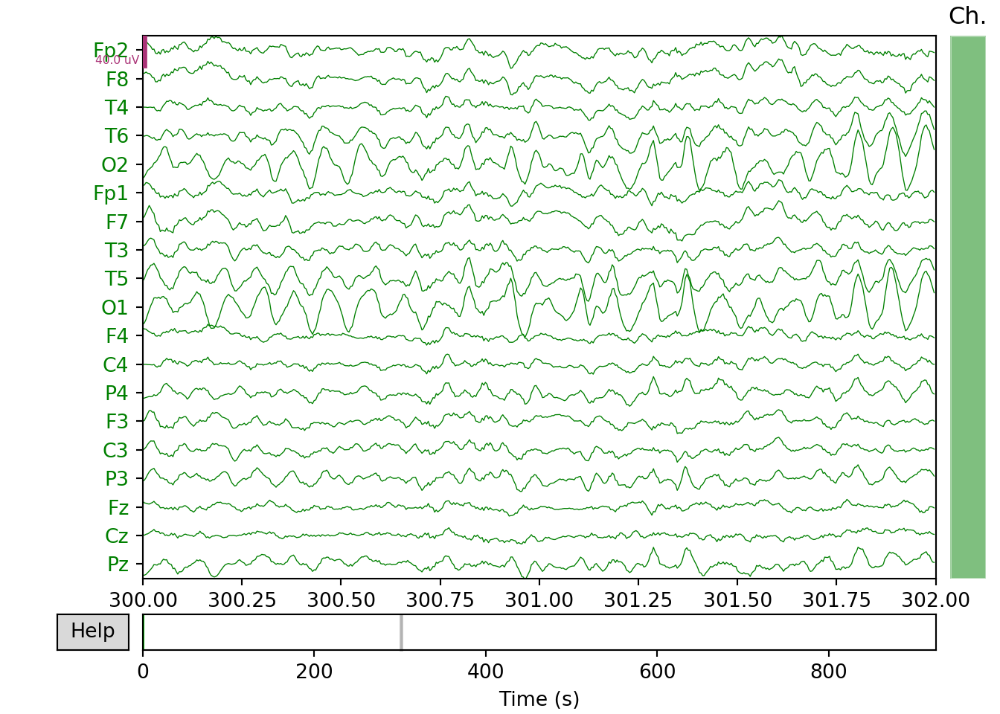
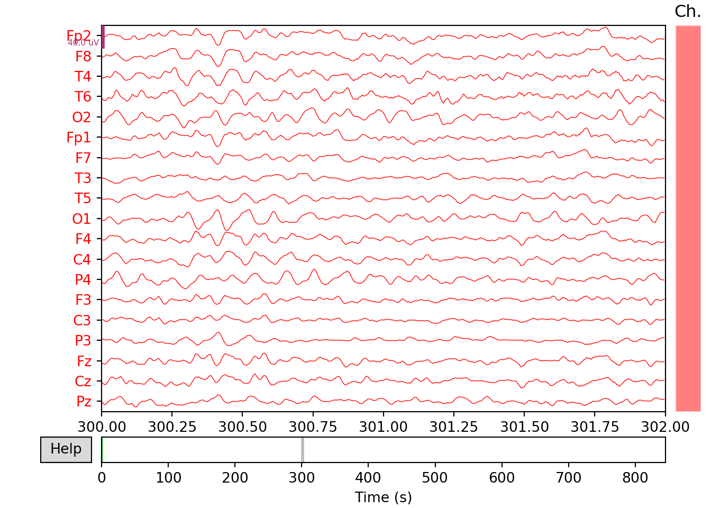
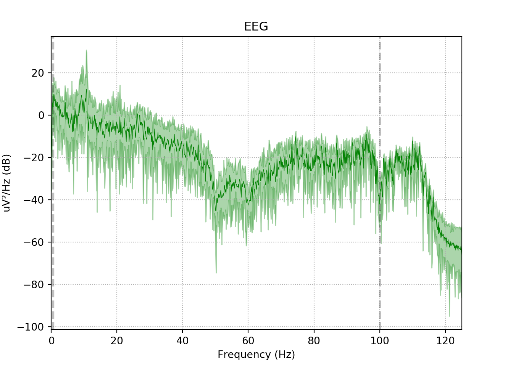

Chapter 3 EEG data import & Analysis
The EEG data is available in the ’*.edf’ file extension. We have to download the EEG files and place in the working directory of the Python program such as Jupyter notebook or Spyder. Then we will be using the MNE Python library for the processing of the EEG signal. The following section provides the code block for import the necessary library files for EEG analysis.
3.1 MNE Library for EEG Analysis
import mne # MNE library for EEG analysis
import matplotlib.pyplot as plt # Plotting library
plt.style.use('seaborn-bright') # Plot Style
plt.rcParams['figure.dpi'] = 300 # DPI setting
plt.rcParams['figure.figsize'] = (8, 6)3.2 Data Import
This code chunk explains how to import the EEG file into the Python workspace by the command mne.io.read_raw_edf. Moreover, it also shows the file info of the EEG file imported into the workspace.
# Data import
raw_h = mne.io.read_raw_edf("h01.edf", preload=True)# Import data file into workspace
# h01 specifies the EEG record of healthy control-1## Extracting EDF parameters from C:\Users\RajuPC\Documents\MyR\MyGitbook\EEG\EEG_analysis\h01.edf...
## EDF file detected
## Setting channel info structure...
## Creating raw.info structure...
## Reading 0 ... 231249 = 0.000 ... 924.996 secs...raw_s = mne.io.read_raw_edf("s01.edf", preload=True)# Import data file into workspace
# s01 specifies the EEG record of SZ patient-1
# Give the sample rate## Extracting EDF parameters from C:\Users\RajuPC\Documents\MyR\MyGitbook\EEG\EEG_analysis\s01.edf...
## EDF file detected
## Setting channel info structure...
## Creating raw.info structure...
## Reading 0 ... 211249 = 0.000 ... 844.996 secs...print('sample rate:', raw_h.info['sfreq'], 'Hz')
# Give the size of the data matrix## sample rate: 250.0 Hzprint('Data matrix size : %s channels x %s samples' % (raw_h.info['nchan'], len(raw_h.times)))## Data matrix size : 19 channels x 231250 samplesprint('Channel names:', raw_h.info['ch_names'])## Channel names: ['Fp2', 'F8', 'T4', 'T6', 'O2', 'Fp1', 'F7', 'T3', 'T5', 'O1', 'F4', 'C4', 'P4', 'F3', 'C3', 'P3', 'Fz', 'Cz', 'Pz']3.3 Time series plot of the EEG signal
This code plots the raw EEG signal using the available function plot.
Healthy Individual
# Plotting the raw EEG signal
raw_h.plot(start=300,duration=2, block=True, show=False, color='green')SZ Patient
# Plotting the raw EEG signal
raw_s.plot(start=300,duration=2, block=True, show=False, color='red')3.4 Bandpass filtering of the EEG signal
This code applies a FIR filter based on windowing technique to design a bandpass filter with lower cut-off frequency at 0.5Hz and upper cut-off frequency at 100Hz.
Healthy Control
xfil_h=raw_h.filter(0.5, 100., fir_design='firwin')#Bandpass filtering## Filtering raw data in 1 contiguous segment
## Setting up band-pass filter from 0.5 - 1e+02 Hz
##
## FIR filter parameters
## ---------------------
## Designing a one-pass, zero-phase, non-causal bandpass filter:
## - Windowed time-domain design (firwin) method
## - Hamming window with 0.0194 passband ripple and 53 dB stopband attenuation
## - Lower passband edge: 0.50
## - Lower transition bandwidth: 0.50 Hz (-6 dB cutoff frequency: 0.25 Hz)
## - Upper passband edge: 100.00 Hz
## - Upper transition bandwidth: 25.00 Hz (-6 dB cutoff frequency: 112.50 Hz)
## - Filter length: 1651 samples (6.604 sec)xfil_h.plot(start=300, duration=2, bgcolor='w',show=False, events=None,proj=False,color='green')#plotting of the filtered signal
SZ patient
xfil_s=raw_s.filter(0.5, 100., fir_design='firwin')#Bandpass filtering## Filtering raw data in 1 contiguous segment
## Setting up band-pass filter from 0.5 - 1e+02 Hz
##
## FIR filter parameters
## ---------------------
## Designing a one-pass, zero-phase, non-causal bandpass filter:
## - Windowed time-domain design (firwin) method
## - Hamming window with 0.0194 passband ripple and 53 dB stopband attenuation
## - Lower passband edge: 0.50
## - Lower transition bandwidth: 0.50 Hz (-6 dB cutoff frequency: 0.25 Hz)
## - Upper passband edge: 100.00 Hz
## - Upper transition bandwidth: 25.00 Hz (-6 dB cutoff frequency: 112.50 Hz)
## - Filter length: 1651 samples (6.604 sec)xfil_s.plot(start=300, duration=2, bgcolor='w',show=False, events=None,proj=False,color='red')#plotting of the filtered signal
3.5 The power spectral density (PSD)function of the EEG signal
This code performs the Power Spectral Density (PSD) function of the Filtered EEG signal.
Healthy Control
xfil_h.plot_psd(area_mode='range', tmax=10.0, show=False, average=True, color='green')
SZ Patient
xfil_s.plot_psd(area_mode='range', tmax=10.0, show=False, average=True, color='red')
3.6 More Links
More information related to applications of EEG in brain disorders can be found in the following articles:
- (T. Krishnan, Balasubramanian, and Krishnan 2016)
- (Thanaraj and Chitra 2014)
- (P. T. Krishnan and Balasubramanian 2017)
- (P. T. Krishnan, Balasubramanian, and Krishnan 2017)
- (Thanaraj and Parvathavarthini 2017)
- (Abhinaya and Charanya 2016)
- (Johannesen et al. 2016)
- (Götz et al. 2017)
- (Thilakvathi et al. 2017)
- (Olejarczyk and Jernajczyk 2017b)
References
T. Krishnan, Palani, Parvathavarthini Balasubramanian, and Chitra Krishnan. 2016. “Segmentation of Brain Regions by Integrating Meta Heuristic Multilevel Threshold with Markov Random Field.” Current Medical Imaging Reviews 12 (1): 4–12. https://doi.org/10.2174/1573394711666150827203434.
Thanaraj, K Palani, and K Chitra. 2014. “Multichannel Feature Extraction and Classification of Epileptic States Using Higher Order Statistics and Complexity Measures.” International Journal of Engineering {&} Technology (0975-4024) 6 (1): 102–9. http://www.enggjournals.com/ijet/abstract.html?file=14-06-01-163.
Krishnan, Palani Thanaraj, and Parvathavarthini Balasubramanian. 2017. “Automated EEG seizure detection based on S-Transform.” In 2016 Ieee International Conference on Computational Intelligence and Computing Research, Iccic 2016, 1–5. IEEE. https://doi.org/10.1109/ICCIC.2016.7919558.
Krishnan, Palani Thanaraj, Parvathavarthini Balasubramanian, and Chitra Krishnan. 2017. “Evaluation of joint analysis of multiple interictal events for spike extraction and source imaging.” International Journal of Biomedical Engineering and Technology 25 (1): 77. https://doi.org/10.1504/IJBET.2017.086553.
Thanaraj, Palani, and B. Parvathavarthini. 2017. “Multichannel interictal spike activity detection using time–frequency entropy measure.” Australasian Physical & Engineering Sciences in Medicine 40 (2): 413–25. https://doi.org/10.1007/s13246-017-0550-6.
Abhinaya, B., and D. Charanya. 2016. “Feature Extraction and Selection of a Combination of Entropy Features for Real-time Epilepsy Detection.” International Journal of Engineering and Computer Science 5 (5): 16073–8. https://doi.org/10.18535/ijecs/v5i4.03.
Johannesen, Jason K., Jinbo Bi, Ruhua Jiang, Joshua G. Kenney, and Chi-Ming A. Chen. 2016. “Machine learning identification of EEG features predicting working memory performance in schizophrenia and healthy adults.” Neuropsychiatric Electrophysiology 2 (1). https://doi.org/10.1186/s40810-016-0017-0.
Götz, Th, L Stadler, G Fraunhofer, A M Tomé, H Hausner, and E W Lang. 2017. “A combined cICA-EEMD analysis of EEG recordings from depressed or schizophrenic patients during olfactory stimulation.” Journal of Neural Engineering 14 (1): 016011. https://doi.org/10.1088/1741-2552/14/1/016011.
Thilakvathi, B, S Shenbaga Devi, K Bhanu, and M Malaippan. 2017. “EEG signal complexity analysis for schizophrenia during rest and mental activity.” Biomedical Research 28 (1): 1–9. http://www.alliedacademies.org/articles/eeg-signal-complexity-analysis-for-schizophrenia-during-rest-and-mental-activity.html.
Olejarczyk, Elzbieta, and Wojciech Jernajczyk. 2017b. “Graph-based analysis of brain connectivity in schizophrenia.” Edited by Dezhong Yao. PLOS ONE 12 (11): e0188629. https://doi.org/10.1371/journal.pone.0188629.